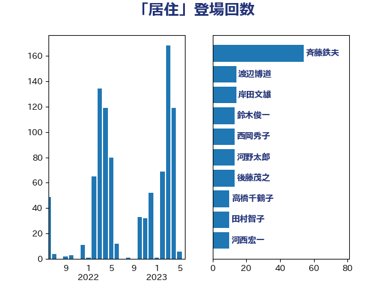

単語「居住」

| 斉藤鉄夫 | 公明党 | 54 回 |
| 渡辺博道 | 自由民主党 | 14 回 |
| 岸田文雄 | 自由民主党 | 14 回 |
| 鈴木俊一 | 自由民主党 | 13 回 |
| 西岡秀子 | 国民民主党 | 13 回 |
| 河野太郎 | 自由民主党 | 13 回 |
| 後藤茂之 | 自由民主党 | 13 回 |
| 高橋千鶴子 | 日本共産党 | 10 回 |
| 田村智子 | 日本共産党 | 10 回 |
| 河西宏一 | 公明党 | 10 回 |
| 西銘恒三郎 | 自由民主党 | 8 回 |
| 横沢高徳 | 立憲民主党 | 8 回 |
| 山本香苗 | 公明党 | 8 回 |
| 若松謙維 | 公明党 | 7 回 |
| 和田政宗 | 自由民主党 | 7 回 |
| 石井正弘 | 自由民主党 | 6 回 |
| 小野田紀美 | 自由民主党 | 6 回 |
| 小倉將信 | 自由民主党 | 6 回 |
| 加藤勝信 | 自由民主党 | 6 回 |
| 金子恭之 | 自由民主党 | 5 回 |
| 芳賀道也 | 国民民主党 | 5 回 |
| 武井俊輔 | 自由民主党 | 5 回 |
| 岡田直樹 | 自由民主党 | 5 回 |
| 山崎正恭 | 公明党 | 5 回 |
| 寺田稔 | 自由民主党 | 5 回 |
| 宮本徹 | 日本共産党 | 5 回 |
| 宮本岳志 | 日本共産党 | 5 回 |
| 吉川赳 | 無所属 | 5 回 |
| 中川宏昌 | 公明党 | 5 回 |
| 高橋英明 | 日本維新の会 | 4 回 |
| 道下大樹 | 立憲民主党 | 4 回 |
| 紙智子 | 日本共産党 | 4 回 |
| 石井啓一 | 公明党 | 4 回 |
| 渡辺猛之 | 自由民主党 | 4 回 |
| 松本剛明 | 自由民主党 | 4 回 |
| 末次精一 | 立憲民主党 | 4 回 |
| 新妻秀規 | 公明党 | 4 回 |
| 岩渕友 | 日本共産党 | 4 回 |
| 小林鷹之 | 自由民主党 | 4 回 |
| 塩村あやか | 立憲民主党 | 4 回 |
| 堀井巌 | 自由民主党 | 4 回 |
| 住吉寛紀 | 日本維新の会 | 4 回 |
| 中川貴元 | 自由民主党 | 4 回 |
| 高良鉄美 | 無所属 | 3 回 |
| 鈴木庸介 | 立憲民主党 | 3 回 |
| 野村哲郎 | 自由民主党 | 3 回 |
| 近藤昭一 | 立憲民主党 | 3 回 |
| 越智隆雄 | 自由民主党 | 3 回 |
| 赤羽一嘉 | 公明党 | 3 回 |
| 谷公一 | 自由民主党 | 3 回 |
| 藤井比早之 | 自由民主党 | 3 回 |
| 萩生田光一 | 自由民主党 | 3 回 |
| 秋葉賢也 | 自由民主党 | 3 回 |
| 福島伸享 | 無所属 | 3 回 |
| 牧山ひろえ | 立憲民主党 | 3 回 |
| 漆間譲司 | 日本維新の会 | 3 回 |
| 永岡桂子 | 自由民主党 | 3 回 |
| 本田顕子 | 自由民主党 | 3 回 |
| 広瀬めぐみ | 自由民主党 | 3 回 |
| 平沼正二郎 | 自由民主党 | 3 回 |
| 岡本あき子 | 立憲民主党 | 3 回 |
| 山本博司 | 公明党 | 3 回 |
| 山本剛正 | 日本維新の会 | 3 回 |
| 塩田博昭 | 公明党 | 3 回 |
| 嘉田由紀子 | 無所属 | 3 回 |
| 吉田統彦 | 立憲民主党 | 3 回 |
| 務台俊介 | 自由民主党 | 3 回 |
| 前原誠司 | 国民民主党 | 3 回 |
| 伊藤渉 | 公明党 | 3 回 |
| 伊波洋一 | 無所属 | 3 回 |
| 井上貴博 | 自由民主党 | 3 回 |
| 三浦信祐 | 公明党 | 3 回 |
| 鰐淵洋子 | 公明党 | 2 回 |
| 鬼木誠 | 立憲民主党 | 2 回 |
| 音喜多駿 | 日本維新の会 | 2 回 |
| 青山大人 | 立憲民主党 | 2 回 |
| 長友慎治 | 国民民主党 | 2 回 |
| 鈴木貴子 | 自由民主党 | 2 回 |
| 鈴木義弘 | 国民民主党 | 2 回 |
| 金城泰邦 | 公明党 | 2 回 |
| 野田聖子 | 自由民主党 | 2 回 |
| 野田国義 | 立憲民主党 | 2 回 |
| 進藤金日子 | 自由民主党 | 2 回 |
| 篠原孝 | 立憲民主党 | 2 回 |
| 竹谷とし子 | 公明党 | 2 回 |
| 稲津久 | 公明党 | 2 回 |
| 福重隆浩 | 公明党 | 2 回 |
| 矢倉克夫 | 公明党 | 2 回 |
| 玄葉光一郎 | 立憲民主党 | 2 回 |
| 河野義博 | 公明党 | 2 回 |
| 柳ヶ瀬裕文 | 日本維新の会 | 2 回 |
| 林芳正 | 自由民主党 | 2 回 |
| 松野博一 | 自由民主党 | 2 回 |
| 松村祥史 | 自由民主党 | 2 回 |
| 松原仁 | 立憲民主党 | 2 回 |
| 末松信介 | 自由民主党 | 2 回 |
| 早稲田ゆき | 立憲民主党 | 2 回 |
| 川合孝典 | 国民民主党 | 2 回 |
| 岸真紀子 | 立憲民主党 | 2 回 |
| 岡本三成 | 公明党 | 2 回 |
| 山添拓 | 日本共産党 | 2 回 |
| 山本太郎 | れいわ新選組 | 2 回 |
| 山岡達丸 | 立憲民主党 | 2 回 |
| 尾身朝子 | 自由民主党 | 2 回 |
| 小野泰輔 | 日本維新の会 | 2 回 |
| 小宮山泰子 | 立憲民主党 | 2 回 |
| 安江伸夫 | 公明党 | 2 回 |
| 大西英男 | 自由民主党 | 2 回 |
| 大塚耕平 | 国民民主党 | 2 回 |
| 大口善徳 | 公明党 | 2 回 |
| 吉田とも代 | 日本維新の会 | 2 回 |
| 伊藤俊輔 | 立憲民主党 | 2 回 |
| 今井絵理子 | 自由民主党 | 2 回 |
| 仁比聡平 | 日本共産党 | 2 回 |
| 中谷一馬 | 立憲民主党 | 2 回 |
| 中川康洋 | 公明党 | 2 回 |
| 齋藤健 | 自由民主党 | 1 回 |
| 黄川田仁志 | 自由民主党 | 1 回 |
| 高階恵美子 | 自由民主党 | 1 回 |
| 高橋光男 | 公明党 | 1 回 |
| 高木かおり | 日本維新の会 | 1 回 |
| 須藤元気 | 無所属 | 1 回 |
| 阿部弘樹 | 日本維新の会 | 1 回 |
| 長谷川英晴 | 自由民主党 | 1 回 |
| 鈴木英敬 | 自由民主党 | 1 回 |
| 鈴木宗男 | 日本維新の会 | 1 回 |
| 金村龍那 | 日本維新の会 | 1 回 |
| 野田佳彦 | 立憲民主党 | 1 回 |
| 重徳和彦 | 立憲民主党 | 1 回 |
| 輿水恵一 | 公明党 | 1 回 |
| 赤木正幸 | 日本維新の会 | 1 回 |
| 西村明宏 | 自由民主党 | 1 回 |
| 藤原崇 | 自由民主党 | 1 回 |
| 蓮舫 | 立憲民主党 | 1 回 |
| 菅家一郎 | 自由民主党 | 1 回 |
| 若林健太 | 自由民主党 | 1 回 |
| 自見はなこ | 自由民主党 | 1 回 |
| 羽田次郎 | 立憲民主党 | 1 回 |
| 美延映夫 | 日本維新の会 | 1 回 |
| 細田健一 | 自由民主党 | 1 回 |
| 竹詰仁 | 国民民主党 | 1 回 |
| 穀田恵二 | 日本共産党 | 1 回 |
| 石橋林太郎 | 自由民主党 | 1 回 |
| 石川香織 | 立憲民主党 | 1 回 |
| 石川昭政 | 自由民主党 | 1 回 |
| 石垣のりこ | 立憲民主党 | 1 回 |
| 石原正敬 | 自由民主党 | 1 回 |
| 石井苗子 | 日本維新の会 | 1 回 |
| 石井浩郎 | 自由民主党 | 1 回 |
| 田村貴昭 | 日本共産党 | 1 回 |
| 田村まみ | 国民民主党 | 1 回 |
| 田中健 | 国民民主党 | 1 回 |
| 清水貴之 | 日本維新の会 | 1 回 |
| 浜野喜史 | 国民民主党 | 1 回 |
| 浜田靖一 | 自由民主党 | 1 回 |
| 津島淳 | 自由民主党 | 1 回 |
| 池下卓 | 日本維新の会 | 1 回 |
| 水岡俊一 | 立憲民主党 | 1 回 |
| 櫛渕万里 | れいわ新選組 | 1 回 |
| 横山信一 | 公明党 | 1 回 |
| 森山浩行 | 立憲民主党 | 1 回 |
| 梅村聡 | 日本維新の会 | 1 回 |
| 根本幸典 | 自由民主党 | 1 回 |
| 柴田巧 | 日本維新の会 | 1 回 |
| 柘植芳文 | 自由民主党 | 1 回 |
| 枝野幸男 | 立憲民主党 | 1 回 |
| 本村伸子 | 日本共産党 | 1 回 |
| 末松義規 | 立憲民主党 | 1 回 |
| 木原誠二 | 自由民主党 | 1 回 |
| 早坂敦 | 日本維新の会 | 1 回 |
| 新藤義孝 | 自由民主党 | 1 回 |
| 新垣邦男 | 立憲民主党 | 1 回 |
| 斎藤アレックス | 国民民主党 | 1 回 |
| 手塚仁雄 | 立憲民主党 | 1 回 |
| 庄子賢一 | 公明党 | 1 回 |
| 山際大志郎 | 自由民主党 | 1 回 |
| 山田賢司 | 自由民主党 | 1 回 |
| 小島敏文 | 自由民主党 | 1 回 |
| 宮口治子 | 立憲民主党 | 1 回 |
| 守島正 | 日本維新の会 | 1 回 |
| 大家敏志 | 自由民主党 | 1 回 |
| 塩川鉄也 | 日本共産党 | 1 回 |
| 城井崇 | 立憲民主党 | 1 回 |
| 國重徹 | 公明党 | 1 回 |
| 吉田はるみ | 立憲民主党 | 1 回 |
| 吉井章 | 自由民主党 | 1 回 |
| 古川俊治 | 自由民主党 | 1 回 |
| 勝部賢志 | 立憲民主党 | 1 回 |
| 加藤竜祥 | 自由民主党 | 1 回 |
| 冨樫博之 | 自由民主党 | 1 回 |
| 倉林明子 | 日本共産党 | 1 回 |
| 佐藤英道 | 公明党 | 1 回 |
| 佐藤正久 | 自由民主党 | 1 回 |
| 佐藤公治 | 立憲民主党 | 1 回 |
| 伊藤孝恵 | 国民民主党 | 1 回 |
| 伊東良孝 | 自由民主党 | 1 回 |
| 伊佐進一 | 公明党 | 1 回 |
| 井上哲士 | 日本共産党 | 1 回 |
| 中西祐介 | 自由民主党 | 1 回 |
| 中根一幸 | 自由民主党 | 1 回 |
| 中川正春 | 立憲民主党 | 1 回 |
| 中島克仁 | 立憲民主党 | 1 回 |
| 上田清司 | 国民民主党 | 1 回 |
| 上月良祐 | 自由民主党 | 1 回 |
| 三浦靖 | 自由民主党 | 1 回 |
| おおつき紅葉 | 立憲民主党 | 1 回 |